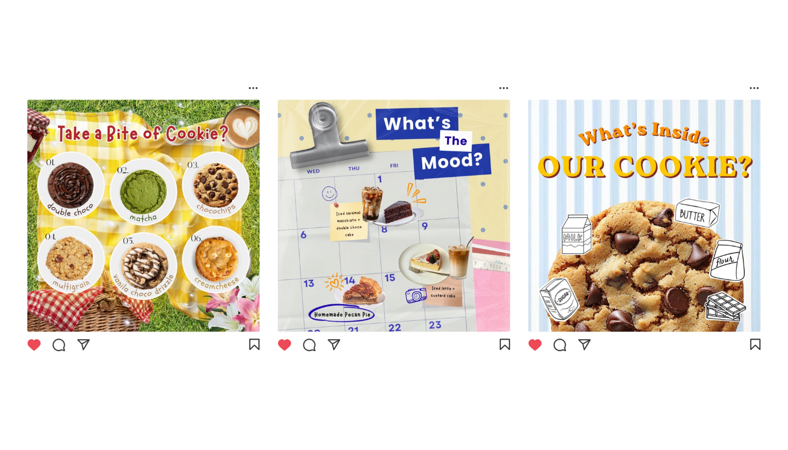
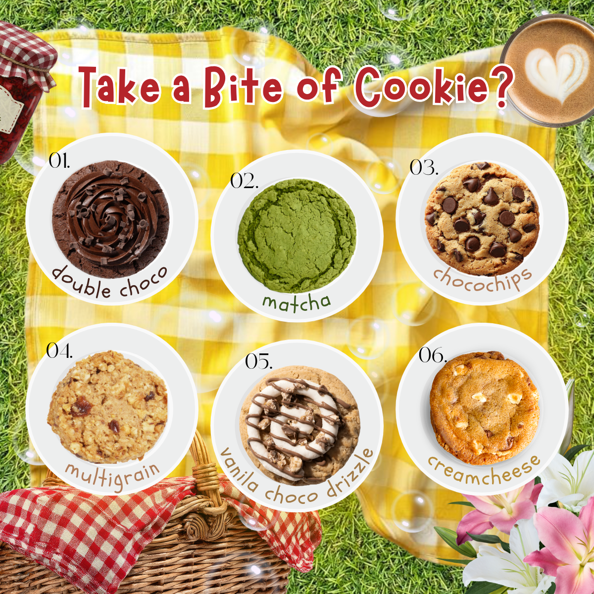
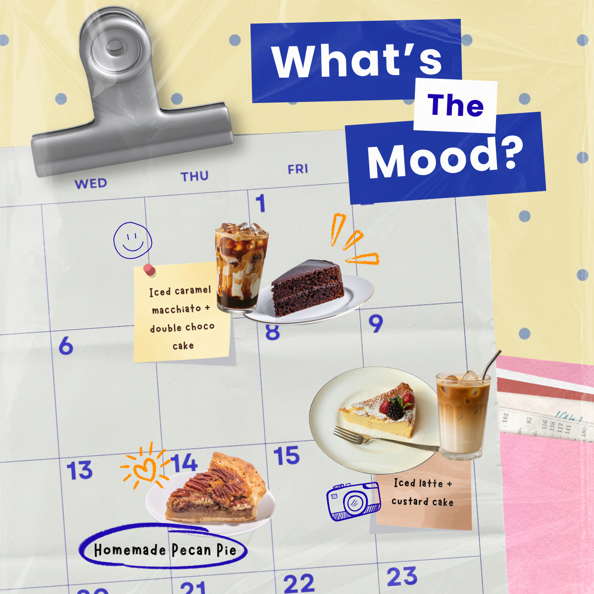
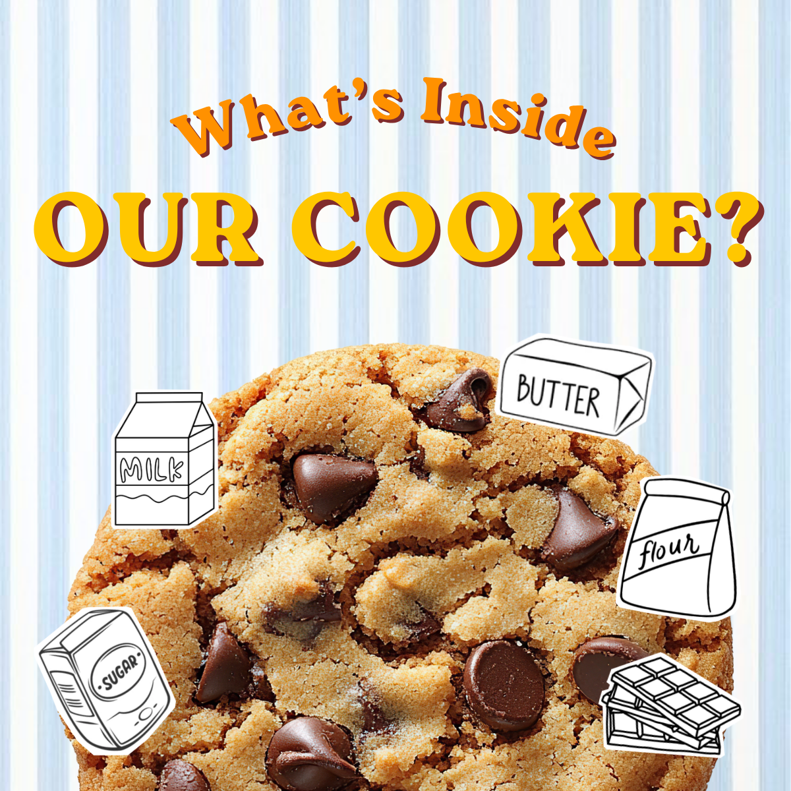

Cookies Social Media Mockup

Project Overview
This project explores a playful Instagram campaign concept for an artisan cookie brand. The objective was to create content that feels more like an experience than traditional product promotion by combining storytelling, editorial layouts, and interactive posts.
Instead of relying solely on promotional graphics, the campaign introduces cookies through different narratives—highlighting flavors, ingredients, seasonal moods, and behind-the-scenes moments—to encourage curiosity and engagement.
Every post was designed as part of a cohesive visual system using warm colors, handcrafted typography, textured backgrounds, and food photography to reinforce the brand's homemade and comforting personality.
Design Goal
Making Product Promotion Feel Like Storytelling
Rather than simply showcasing products, the challenge was to create Instagram content that sparks curiosity, encourages interaction, and strengthens the emotional connection between the audience and the brand.
The campaign aimed to transform everyday promotional content into engaging visual stories while maintaining a consistent and recognizable brand identity.
Creative Process
The design process focused on creating visually rich compositions with strong branding consistency, clear visual hierarchy, and interactive social media concepts.
Creative Research
The project started by exploring current bakery branding trends and analyzing how artisan food brands communicate through Instagram.
- Brand Research
Explored visual styles used by modern bakeries and cafés. - Moodboard
Collected references featuring picnic aesthetics, vintage textures, handwritten typography, and warm color palettes. - Creative Direction
Defined the campaign as playful, cozy, nostalgic, and handmade.
Content Planning
Planned different content categories to maintain audience engagement instead of repeatedly posting product promotions.
- Product Showcase
- Ingredient Highlights
- Interactive Posts
- Mood & Lifestyle Content
- Seasonal Campaign Ideas
Visual Design
Developed a cohesive visual system using food photography, editorial layouts, layered paper elements, playful typography, and warm color palettes.

Interactive Content
Designed interactive Instagram posts that encourage users to participate through questions, choices, and playful storytelling.
- "Take a Bite" flavor showcase.
- "What's the Mood?" weekly recommendation.
- "What's Inside Our Cookie?" ingredient education.

Feed Consistency
Refined spacing, typography, colors, and visual hierarchy to ensure each post worked individually while maintaining a cohesive Instagram feed when viewed together.

Key Design Focus
- Built a cohesive Instagram visual identity.
- Applied editorial-inspired food compositions.
- Designed storytelling-based promotional content.
- Created interactive posts to encourage engagement.
- Maintained consistency across typography, colors, and layouts.
- Strengthened the artisan and homemade brand personality.